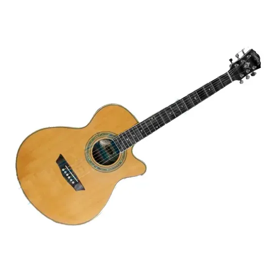
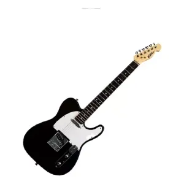
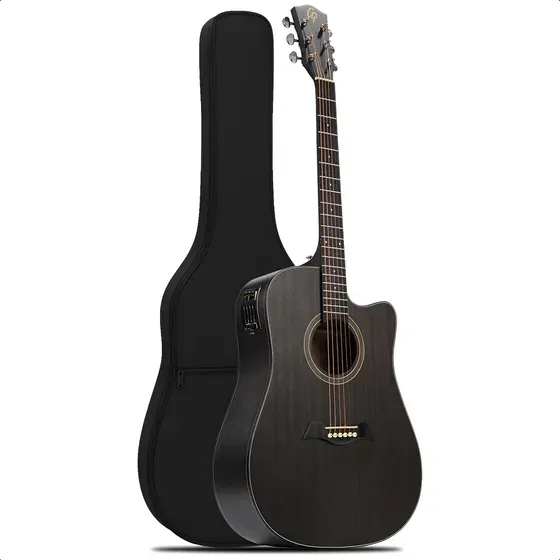

Guitarras
La importancia de las guitarras
La guitarra es uno de los instrumentos musicales más populares y versátiles del mundo. Ha influido en géneros tan diversos como el folclore, el flamenco, el rock, el jazz y la música clásica. Las guitarras permiten la expresión melódica y armónica en solitario y en conjuntos, y su disponibilidad técnica (acústica, clásica, eléctrica) las hace accesibles para principiantes y profesionales. Además, tocar la guitarra aporta beneficios cognitivos y emocionales, como la mejora de la memoria, concentración y reducción del estrés.

Guitarra acústica
La guitarra acústica es versátil y adecuada para acompañamiento rítmico y fingerpicking; destaca por su caja de resonancia.

Guitarra clásica
La guitarra clásica usa cuerdas de nylon y es habitual en música clásica y flamenca; su tacto y sonoridad son distintivos.

Guitarra eléctrica
La guitarra eléctrica, amplificada, es central en géneros como el rock y el blues; ofrece gran variedad de tonos mediante efectos y amplificación.

Guitarra electroacústica
Combina la calidez acústica con la posibilidad de ser amplificada, ideal para presentaciones en vivo.
FAQ
La fabricación de una guitarra combina madera, herrajes y trabajo de luthier. El cuerpo se construye con maderas seleccionadas (palorrosa, caoba, abeto), el mástil se talla y se une al cuerpo, y el diapasón se instala con trastes precisos. Tras el ensamblado se lijan y barnizan las superficies, se montan las clavijas, puente y cuerda, y finalmente se hace la puesta a punto (regulación del alma, altura de cuerdas y entonación) para asegurar buen sonido y tocabilidad.
Para mantener una guitarra en buen estado es importante vigilar la humedad (mantenerla entre 40-60%), evitar cambios bruscos de temperatura, limpiar las cuerdas y el diapasón regularmente, cambiar las cuerdas cuando pierdan brillo o resistencia, y guardar el instrumento en su funda o estuche para protegerlo de golpes. Además, realizar ajustes periódicos (entronación, altura de cuerdas, alma) alarga la vida y mejora el sonido.
Es importante cuidar las guitarras porque un mantenimiento adecuado preserva su sonoridad, estabilidad y valor. Un instrumento bien cuidado ofrece mejor resonancia, afinación estable y mayor durabilidad; además, facilita el aprendizaje y la expresión musical, y protege la inversión del músico.